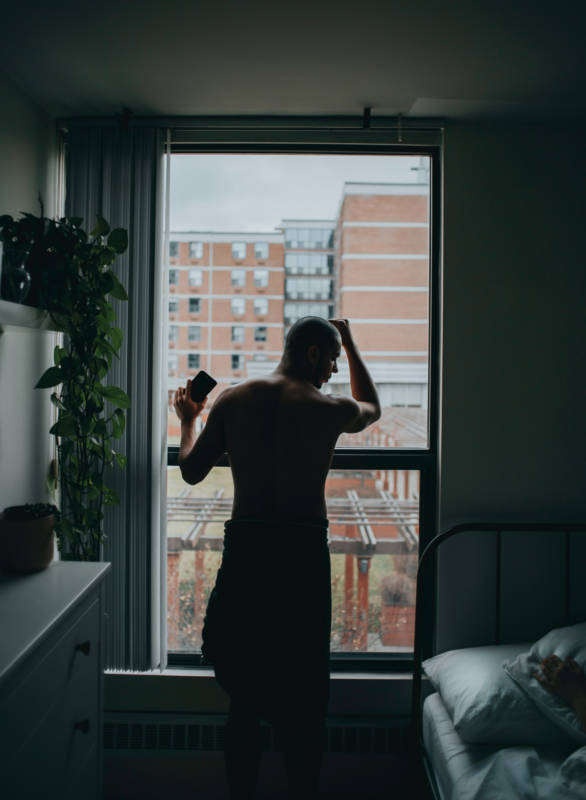

Depression is a mood disorder that causes a persistent feeling of sadness and loss of interest. People often experience some feeling of sadness or low in their day-to-day life, but if you are experiencing it on a regular basis then it can be a case of Major Depression (Clinical Depression).
Depression affects the life of a person both emotionally and physically. A depressed person starts to feel guilt, sad, helpless and sometimes even think that it is not worth living and at extreme case it results in suicide attempts.
As estimated by WHO, depression can be the second largest illness in terms of morbidity in the coming time. Currently, one out of every five women, and twelve men have depression, in addition to it, 2% of school children, and 5% of teenagers also suffer from depression.
Major depression is a kind of depression that interfere with the normal ability of a person to work, sleep, eat and enjoy the activities which once pleasured him or her. It lasts for at least two weeks and can occur once, twice or several times in a lifetime.
Dysthymia or Persistent Depressive Disorder is a continuous chronic form of depression that results in feeling depressed for a long period of time. It is more or less the same as major depression but the symptoms are less severe. The major difference between these two kinds of depression is the time period for which they last. While major depression occurs for at least two weeks or a few months, depression is identified to be dysthymia if the symptoms last for at least two years or more.
Unlike major depression, people with dysthymia feel depressed, sad, etc. all the time and even forget how it feels not to be depressed.
Bipolar Disorder (also referred to as Manic-Depressive Disorder) involves the cycles of depressive lows and then manic highs. Sometimes the mood changes can be rapid also, but generally they are gradual. Bipolar are less common than the other two kinds of depression. When the person is in depressed cycle, he may experience some or all of the symptoms of major depression and when in manic cycle, symptoms of mania are experienced by him or her.
Symptoms are the same as the major depression when in depressed cycle. But when the person is in manic cycle, he may have following symptoms -
Mania affects the thinking process, judgement and social behavior and person can harm himself due to these kinds of symptoms.
There are various causes of depression, they may be environmental as well as biological and genetic.
It has been known for long that if a person’s family history involves people with these depressive illnesses then the person is at high risk of being affected by the depression.
Researches show that depressive illness can be inherited to some extent from families to the person. But it does not mean that if a person has some relatives that are suffering from depression, then he will also definitely suffer from depression, it only means that person is more vulnerable to them.
The genetic cause is predominantly high in case of Bipolar disorder. The study shows that out of the total bipolar disorders, about 50% of the cases have some relative suffered from depression in past.
When a mother or father has bipolar disorder, their child will have a 25% chance of developing some type of clinical depression. If both parents have bipolar disorder, the chance of their child also developing bipolar disorder is between 50% and 75%. Brothers and sisters of those with bipolar disorder may be 8 to 18 times more likely to develop bipolar disorder, and 2 to 10 times more likely to develop major depressive disorder than others with no such siblings.
Undoubtedly psychological stress is a major cause for a person being depressed. Stress has been increasingly featured in scientific works as well as in popular media such as internet, newspapers and TV due to terrorism, war, divorce and unemployment.
According to the duration of stress, psychological stresses may be divided into two classes: which are acute psychological stress and chronic psychological stress (such as anxiety about children, financial problems and periodic headaches).
Psychological stress can be negative as well as positive also. If a person is stressed because of loss of a loved one, loss of a job, loss of a relationship and divorce, it is a kind of negative stress. However, if a person is planning for a wedding, preparing for a new job, and moving to a new city, etc. he may get positively stressed. But important to note that both leads to depression ultimately.
When a person is stressed so much, his mind starts to think that he is responsible for all the bad things happening around him. He thinks that he is not able or qualified enough to solve the problem which makes him think that he is guilty, helpless. Now, the interesting thing is that he starts to think why he is so worried about these things and because of this he feels more guilty about himself, ultimately resulting in making him more and more stressed and finally being depressed.
It is evident from the researches that in many of the cases of depression, the person has experienced some traumatic events which include- loss of a loved one, a serious medical illness, the end of a marriage or significant financial loss, etc.
The most common childhood difficulties-
But the most difficult event for a child that most probably leads him to be depressed is the separation or death of his or her parents before the age of eleven.
Those incidents affect the brain of a child adversely and due to lack of proper care or environment around him, he starts suffering from depression.
Depression is a serious mental disorder, and in its worst case, can lead a person to suicide. The development of depression is due to a various number of factors but they all affect the mind. Understanding the effects, possible triggers, and treatments of the disorder is essential for promoting the well-being of affected individuals.
There is also a need for proper studies and research that how depression works to effectively cure it.
Research Journal of Recent Sciences Vol. 1(4), 79-87, April (2012), Iyer K. and Khan Z.A.